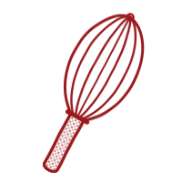
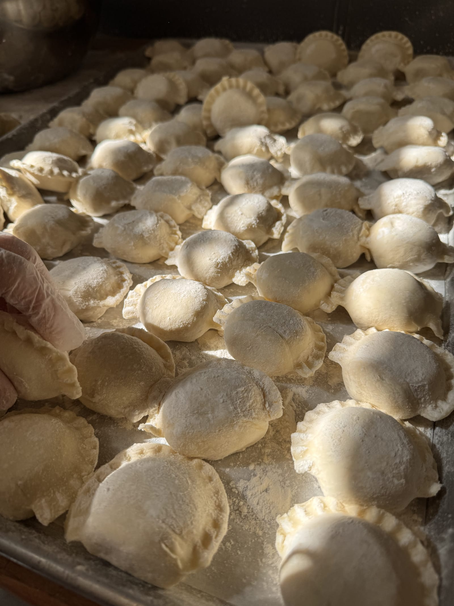

A family bakery since 1992
Richard and Teresa Podedworny opened Northside Bakery in 1992 for a neighborhood that missed the taste of home. Within a year we moved to the North Side of Williamsburg, and we’re still family-run today.


Baked on North 8th since 1992.
Richard and Teresa Podedworny opened Northside Bakery in 1992 for a neighborhood that missed the taste of home. Within a year we moved to the North Side of Williamsburg, and we’re still family-run today.
Smacznego from North 8th.